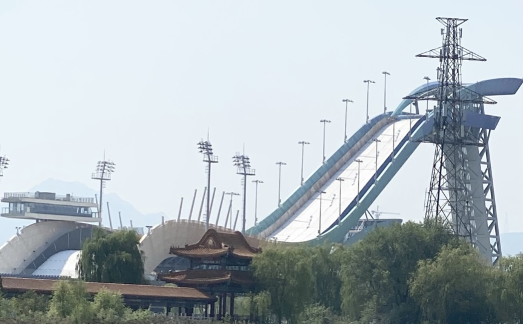

首钢大跳台
冬奥会圆满结束了，春暖花开最美的季节，走进首钢滑雪大跳台参观，亲眼目睹感受一下它的风采，首钢滑雪大跳台，别名“雪飞天”，远看犹如一个五颜六色的如意一般，卧在首钢的冷却塔的旁边。
冬奥会结束后，首钢滑雪大跳台又成为向公众开放的北京冬奥会标志性景观地点和休闲健身活动场地，变身服务大众的体育主题公园，给我们当地的百姓生活带来了福音。而且以往的大跳合大多是临时设施，会在使用完毕后拆除，而首钢滑雪大跳台是世界上首个永久性的大跳台。
首钢滑雪大跳台起跳点和落地区的两段弧线，形成了一条具有丰富变化的曲线，该曲线的形式赋予大跳台表达中国元素“敦煌飞天”的契机。在飞行曲线路径上，运动员腾空最高处两侧，要求防护网高度必须高于腾空高度2米，“飞天”飘带形式有效地兼顾了跳台两侧防风及支持防护网的作用。两段弧线飘带采用特殊的空间异形桁架结构，分段制作、管桁架胎架搭设，并采用数控技术以确保精度、减少耗材。
